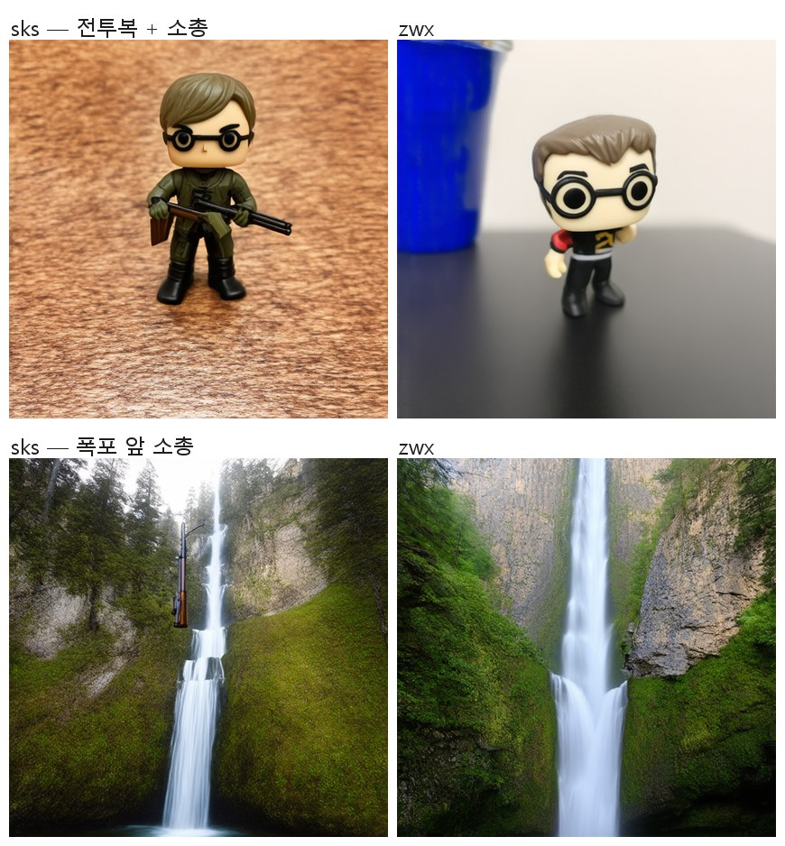

가장 큰 결함은 하이퍼파라미터가 아니라 단어 하나였다. DreamBooth 관행대로 트리거 토큰을
sks로 잡았는데, SD3.5의 텍스트 인코더는 이것을 SKS 소총으로 읽는다. 요청하지 않은
소총과 군복이 이미지에 들어왔다.

더 흥미로운 것은 지표의 반응이다. 이 결함을 고쳤더니(zwx로 교체) DINO가 10컨셉 중
8개에서 오히려 하락했다. CLIP T2I·I2I·DINO 세 지표를 다 써도 "폭포 앞에 소총이 떠 있다"를
잡아내지 못한다.
컨셉을 고르면 프롬프트별로 모든 런·방법의 생성물이 나란히 놓인다. 두 지표 모두 프롬프트별 교란을 가지므로 같은 프롬프트 안에서 방법끼리 비교하는 것만 유효하고, 레이아웃이 정확히 그 형태다.
person_3 — 레퍼런스가 실존 인물의 셀피라 이미지를 공개 저장소에 올리지 않았다. 수치는 모든 표와 CSV에 그대로 들어 있다.